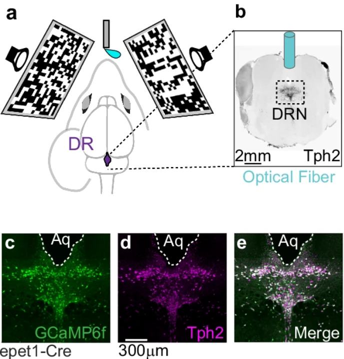
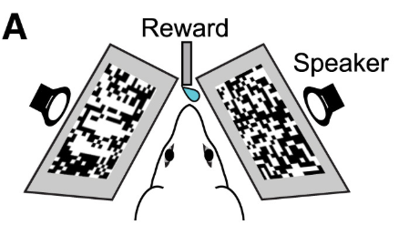

I study how the brain decides which stimuli in our environment matter, which options are worth exploring, and how those evaluations ultimately guide behaviour. My work focuses on serotonin: what information it carries, how it shapes decision making, and why these processes break down in psychiatric conditions such as depression.
I am a postdoctoral fellow in Jean-Claude Béïque's lab at the University of Ottawa, where I study how serotonergic value signals are encoded in cortical circuits and used to guide decisions. I did my PhD at McGill University with Arjun Krishnaswamy, Erik Cook and Anmar Khadra, developing a visual attention task for mice and showing that rapid serotonin dynamics regulate the strength of attention. I combine mouse behaviour, optical and electrophysiological recording, and computational modelling.

Rapid dynamics of dorsal raphe serotonin neurons regulate the strength of visual attention
Jonas Lehnert, Kuwook Cha, Julia Forestell, Kerry Yang, Xinyue Ma, Sinan Shariff, Jonathan P. Britt, Anmar Khadra, Erik P. Cook & Arjun Krishnaswamy
Nature Communications, 2026
· Preprint

Visual attention to features and space in mice using reverse correlation
Jonas Lehnert, Kuwook Cha, Jaime Halperin, Kerry Yang, Daniel F. Zheng, Anmar Khadra, Erik P. Cook & Arjun Krishnaswamy
Current Biology, 2024
· Preprint
Gonadotropin releasing hormone and kisspeptin: it takes two to tango
Anne Duittoz, Xavier Cayla, Renaud Fleurot, Jonas Lehnert & Anmar Khadra
Journal of Neuroendocrinology, 2021
How pulsatile kisspeptin stimulation and GnRH autocrine feedback can drive GnRH secretion: a modeling investigation
Jonas Lehnert & Anmar Khadra
Endocrinology 160(5), 1289–1306, 2019